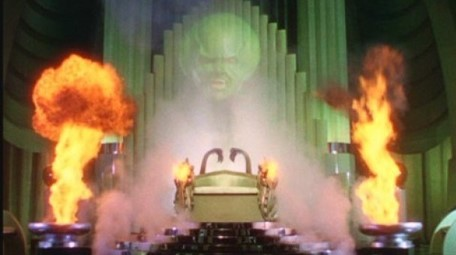
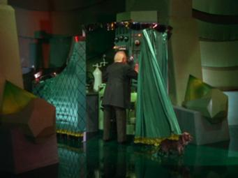

Prototyping#
Why prototype?#
The purpose of prototyping is to test ideas about solutions.
These ideas can be:
Conceptual: testing high-level conceptual ideas about solutions
Technical: testing technical ideas about solutions, such as feasibility
Types of prototype#
Type of prototype |
Purpose |
Characteristics |
When to use |
|---|---|---|---|
Conceptual prototype |
Test conceptual ideas |
High-level, overall vision |
Concept definition |
Feasibility prototype |
Feasibility of various solutions |
Proof of concept |
Concept definition |
Functional storyboard |
Determine usable sequences for presenting information |
Demonstrate workflow |
Early product definition |
Horizontal prototype |
Clarify scope and requirements |
User interface only |
Later product definition |
Vertical prototype |
Test code design, components |
Working but incomplete system |
Even later product definition |
Credit: Craig Borysowich. https://www.globalspec.com/learnmore/contract_manufacturing_fabrication/prototyping_services
For this course, the main distinction we make is between conceptual prototypes and feasibility prototypes.
Conceptual prototype#
Conceptual prototypes are layouts of a solution that shows the key elements that will be created
Typically done in two ways:
Paper prototypes: drawing the ideas on paper/cardboard to demonstrate conceptual ideas
Digital prototypes: (AKA wire frames): digitally drawn and look more like a real application.
The purpose of a conceptual prototype is to fake it before you build it.
They are an inexpensive approach for testing out ideas without building something, and are key tools Human Computer Interaction (HCI).
Typically, early efforts give us more value because they clarify and uncover insights.
Low- vs. high-fidelity conceptual prototypes#
We need to consider to the fidelity of the experience vs. fidelity of prototype. Conceptual prototypes are quick sketches of the system, so a low fidelity compared to a final product, but give can give a high fidelity experience to the customers we test them on.
Low fidelity |
High fidelity |
|---|---|
Show: |
Moving towards UI design territory |
● Major navigation elements |
Closer to what the final version would look like |
● Major content elements |
Include navigation as click through |
Don’t really show: |
Realistic data and images are important |
● Colours |
Useful only as we are finalising solutions |
● Images |
|
● Meaningful content |
|
● Accurate timing |
It is the fidelity of the experience, not the fidelity of the prototype, sketch, or technology that is important for ideation and early design. The earlier that we do so the more valuable it generally is.
Paper prototypes#
Paper prototypes are conceptual prototypes that are a quick “drawing” of a solution that allow us to test out solutions with customers.
They are typically used to explain or simulate a scenario of how the system would be used.
When we use a paper prototype, we show them to customers and then:
Show or ask them to perform a particular task or scenario
Encourage them to talk aloud about what they are understanding and what they think is missing
Ask them to explain their intentions
Ask them questions
Take notes about what we are learning!
We can also use paper prototypes for generating ideas (ideation) — they allow us to quickly explore a concept. We can show them to friends, family, others in our team, etc., get comments, and feedback incorporate on the spot, iterating a new version immediately.
Digital prototypes#
Digital prototypes are a natural next step after paper prototypes. They are used quite extensively in user experience design.
Like paper prototypes, digital prototypes can be used to show navigation to prospective customers/users to ensure expectations are met.
Unlike paper prototypes, this enables people to interact with a solution, and is higher fidelity than paper prototypes.
The fidelity of the experience that the user gets is dependent on how much the digital prototype looks like a complete MVP product.
Wizard of Oz prototype#
Spoiler alert
The Wizard of Oz was “all powerful!” |
… but was really just a man behind a curtain. |
 |
 |
Definition — Wizard of Oz prototype
A wizard of Oz prototype is a solution that looks like a real solution, but the underlying functionality is a person responding to user interaction.
This definition comes from the famous movie The Wizard of Oz, in which the all-powerful “wizard”, seen on the left, is in fact just a sophisticated puppet, controlled by a man behind a curtain. When Toto the dog pulls the curtain back to reveal the man, his charade is revealed.
In the same way, when we prototype systems, we can set up some sophisticated-looking technology, but in the background, the response from user interaction is simply a person.
Note
This does not mean that we deceive out customers – we can be perfectly honest that the functionality is not implemented as the responses are given by a person.
As part of prototyping, we can use anything that we want to conjure up experiences for customers.
It is much easier, cheaper, faster, and more reliable to find a little old man, a microphone, and some loud speakers than it is to find a real wizard. So it is with most software products. Fake it before you build it. – Bill Buxton. Sketching User Experiences: Getting the Design Right and the Right Design (Interactive Technologies) 1st Edition, 2010.
For example, instead of building a complete mobile app to send photos, a server to process photos, and a photo frame to display and interact with photos, we can simply implement some interfaces, and move the photos onto a tablet manually when our users are testing it.
Practical tips for conceptual prototypes#
Here are some practical types for conceptual prototypes:
Keep them simple – eventually will be thrown away
Use a grid to ensure that everything is well aligned
Add meaningful and concise annotations – people refer to it all the time
Encourage feedback
People often don’t tend to criticise designs
“I’m a negative person”
“That’s a lot of work, I don’t to be rude”
“I’m not good with computers”
“Responsibility for bad performance will fall on me” It is harder to criticise something that looks polished
Beware of tools for prototyping unless you want a high-fidelity, polished look
Feasibility prototypes#
Feasibility prototypes explores the technical constraints of design solutions, and are useful at early product development stages.
Feasibility prototypes are both useful and important for innovation, but at not useful until we have found our customers, their problems, and have validated that our solution solves their problem.
Takeaways#
Takeaways
Prototypes are used to help test ideas.
Conceptual prototypes help us test conceptual ideas, while technical prototypes help us test technical approaches.
Prototyping is an iterative process.
Paper prototypes and Wizard of Oz prototypes are cheap and quick ways to test out conceptual ideas and gain feedback.
Digital prototypes are more useful for testing out solutions and workflows.
Low-fidelity prototypes are often more useful than high-fidelity prototypes to gather feedback because they are not so polished, so people are more prone to criticising.